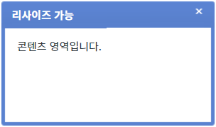
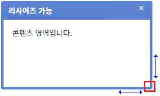
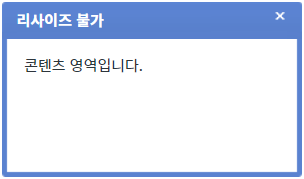
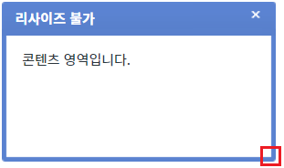

FloatingLayer의 'dragResizable' 속성을 사용하여 사용자가 컴포넌트의 크기를 조절할 수 있도록 설정한 예제입니다. 이 속성을 'true'로 설정하면 오른쪽 하단 영역을 마우스로 드래그하여 크기를 조절할 수 있습니다.
설정에 따른 동작은 다음과 같습니다. - "false" : [default] 리사이즈 기능을 사용하지 않습니다. - "true" : 리사이즈 기능을 사용합니다. 사용자가 'FloatingLayer'의 오른쪽 하단 영역을 마우스로 드래그하여 크기를 조절할 수 있습니다.
- 'FloatingLayer'의 위치는 절대 값으로(display:absolute) 콘텐츠의 길이에 따라 위치가 변경되지 않습니다.
- 이 예제는 마우스 사용이 가능한 환경에서 정상 동작합니다.
리사이즈 기능 사용하기
리사이즈 기능 사용하지 않기
1
STEP 1: 리사이즈 기능이 적용된 'FloatingLayer'를 표시합니다.
예제 영역 '리사이즈 기능 사용하기'의 '1.1 FloatingLayer 표시하기' 버튼을 클릭합니다.
2
STEP 2: 실행된 결과를 확인합니다.
'FloatingLayer'가 버튼 하단에 표시됩니다. 타이틀은 '리사이즈 가능'입니다.
Image 1.브라우저(Chrome) 실행 예시

3
STEP 3: 우측 하단의 영역을 마우스로 드래그합니다.
Image 2.브라우저(Chrome) 실행 예시

4
STEP 4: 실행된 결과를 확인합니다.
마우스 드래그를 이용해 리사이즈 할 수 있습니다.
1
STEP 1: 리사이즈 기능을 사용하지 않은 'FloatingLayer'를 표시합니다.
예제 영역 '(기본 설정) 리사이즈 기능 사용하지 않기'의 '2.1 FloatingLayer 표시하기' 버튼을 클릭합니다.
2
STEP 2: 실행된 결과를 확인합니다.
'FloatingLayer'가 버튼 하단에 표시됩니다. 타이틀은 '리사이즈 불가'입니다.
Image 3.브라우저(Chrome) 실행 예시

3
STEP 3: 우측 하단의 영역을 마우스로 드래그합니다.
Image 4.브라우저(Chrome) 실행 예시

4
STEP 4: 실행된 결과를 확인합니다.
마우스 드래그를 이용해 리사이즈 할 수 없습니다.
1
속성을 정의합니다.
[필수] dragResizable="옵션 값"
(옵션 설명)
- false : [default] 리사이즈 기능을 사용하지 않습니다.
- true : 리사이즈 기능을 사용합니다. 사용자가 'FloatingLayer'의 오른쪽 하단 영역을 마우스로 드래그하여 크기를 조절할 수 있습니다.
dragResizable